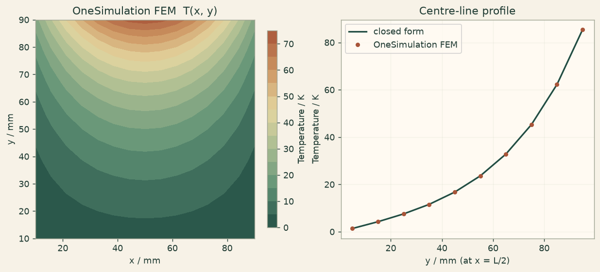

Docs › Examples › Two-dimensional conduction on a plate
Heat transfer · 2D
Two-dimensional conduction on a plate
Steady conduction on a square plate with a sinusoidal edge, graded against the Fourier solution.

What it computes
OneSimulation solves the 2D Laplace heat equation on a plate with second-order finite elements; three edges are held cold and one carries a sinusoidal temperature.
What it checks
The interior field matches T=T0 sin(pi x/L) sinh(pi y/L)/sinh(pi H/L) to finite-element precision.
The notebook
The complete notebook, cell by cell. Run it to produce the figures and the comparison printout.
A thin square plate of side \(L\) is in thermal steady state with no internal heating, so the temperature obeys Laplace's equation
Three edges are held at \(T=0\). The fourth edge (at \(y=L\)) is driven with a half-sine profile \(T(x,L)=T_0\,\sin(\pi x/L)\). The plate is modelled as a thin 3D slab whose two out-of-plane faces are insulated (zero heat flux), which reduces the problem to the planar one.
Reference. Separation of variables gives the exact field
A single Fourier mode suffices because the driven edge is itself a single sine mode, so the comparison is against a closed-form expression, not a truncated series.
from importlib.metadata import version
import numpy as np
import matplotlib.pyplot as plt
import matplotlib
from cycler import cycler
from matplotlib.colors import LinearSegmentedColormap
# OneSimulation figure style: cream paper, dark-green ink, green-sand-copper field colours
CREAM, INK, GREEN, COPPER = "#F7F2E7", "#223D35", "#336B57", "#B66E43"
FIELD_CMAP = LinearSegmentedColormap.from_list(
"onesimulation", ["#214D43", "#5F9175", "#A8BC91", "#E4D6A0", "#CD9561", "#A85539"])
DIVERGING_CMAP = LinearSegmentedColormap.from_list(
"onesimulation_diverging", ["#104F54", "#5E9996", "#F7F2E7", "#D2996E", "#A4472D"])
for _cmap in (FIELD_CMAP, DIVERGING_CMAP):
if _cmap.name not in matplotlib.colormaps:
matplotlib.colormaps.register(_cmap)
plt.rcParams.update({
"figure.facecolor": CREAM, "savefig.facecolor": CREAM, "axes.facecolor": "#FFFAF2",
"text.color": INK, "axes.labelcolor": INK, "axes.titlecolor": INK, "axes.edgecolor": "#9FA593",
"xtick.color": INK, "ytick.color": INK, "grid.color": "#D5D7C8", "image.cmap": "onesimulation",
"axes.prop_cycle": cycler(color=[GREEN, COPPER, "#5F9175", "#A85539", "#214D43", "#CD9561", "#8B9A8D"]),
})
from onesim.cad.d3 import Box
from onesim.materials import IsotropicSolid
from onesim.meshing import StructuredHexahedralMesher
from onesim.numerics import Numerics
from onesim.numerics.fem import FiniteElement, Lagrange
from onesim.numerics.linear import SparseDirect
from onesim.physics.heat_transfer import FixedTemperature, HeatConduction, HeatFlux
from onesim.simulation import Problem, Simulation
print("OneSimulation:", version("onesimulation"))Parameters
The plate is square (\(L \times L\)) in the \(x\)-\(y\) plane and only a few millimetres thick in \(z\); the thickness is immaterial once the two faces normal to \(z\) are insulated.
L = 0.10 # m, plate side (x and y)
thickness = 0.004 # m, out-of-plane thickness (insulated faces)
k = 50.0 # W/(m·K), thermal conductivity
T0 = 100.0 # K, amplitude of the driven edge
geometry = Box(length=L, width=L, height=thickness)
# Structured hexahedral mesh: well resolved in the plane, one cell across the
# thin direction (the field is constant through the thickness).
mesh = StructuredHexahedralMesher(cells=(48, 48, 1)).generate(geometry)
print("Mesh:", mesh.cell_count, "hexahedra")
material = IsotropicSolid(
density=1000.0, specific_heat_capacity=500.0, thermal_conductivity=k,
youngs_modulus=100e9, poisson_ratio=0.3, thermal_expansion_coefficient=1e-5,
)
def driven_edge(x):
# Half-sine profile along the hot edge. The two shared corners (x = 0 and
# x = L) coincide with the cold edges, where the sine is zero; we clamp them
# to exactly 0 so the overlapping Dirichlet conditions agree to the bit.
profile = T0 * np.sin(np.pi * x / L)
profile[np.isclose(x, 0.0, atol=1e-9) | np.isclose(x, L, atol=1e-9)] = 0.0
return profile
model = HeatConduction(domain=geometry.volume, material=material, heating=0.0)
problem = Problem(
name="Steady 2D conduction on a square plate",
geometry=geometry,
physics=(model,),
boundary_conditions=(
# Three cold edges.
FixedTemperature(boundary=geometry.boundaries.x_min, physics=model, value=0.0),
FixedTemperature(boundary=geometry.boundaries.x_max, physics=model, value=0.0),
FixedTemperature(boundary=geometry.boundaries.y_min, physics=model, value=0.0),
# Driven edge: a half-sine temperature along x (callable value).
FixedTemperature(boundary=geometry.boundaries.y_max, physics=model,
value=driven_edge),
# Out-of-plane faces insulated -> planar (2D) behaviour.
HeatFlux(boundary=geometry.boundaries.z_min | geometry.boundaries.z_max,
physics=model, value=0.0),
),
)
simulation = Simulation(
problem=problem,
mesh=mesh,
numerics=Numerics(
spatial=FiniteElement(element=Lagrange(order=2)),
linear_solver=SparseDirect(),
),
)
simulation.validate().require_valid()
result = simulation.solve_stationary()Comparison with the closed-form solution
We evaluate the computed temperature on an interior grid (away from the edges, where the sharp corners between the hot edge and the cold edges are hardest to resolve) and compare it with the exact separation-of-variables field.
def analytic(x, y):
return T0 * np.sin(np.pi * x / L) * np.sinh(np.pi * y / L) / np.sinh(np.pi)
temperature = result.field(model.temperature)
xs = np.linspace(0.1 * L, 0.9 * L, 15)
ys = np.linspace(0.1 * L, 0.9 * L, 15)
gx, gy = np.meshgrid(xs, ys)
pts = np.column_stack((gx.ravel(), gy.ravel(),
np.full(gx.size, thickness / 2)))
num = np.asarray(temperature.evaluate(pts)).reshape(-1)
ana = analytic(gx.ravel(), gy.ravel())
max_abs_error = float(np.max(np.abs(num - ana)))
rel_error = max_abs_error / T0
print(f"Maximum absolute error against the closed form: {max_abs_error:.3f} K "
f"({100 * rel_error:.2f} % of T0)")
# Physical sanity: the interior stays within the imposed temperature range and
# the field grows monotonically from the cold edge towards the hot edge along the
# centre line x = L/2.
center_y = np.linspace(0.05 * L, 0.95 * L, 10)
center = np.column_stack((np.full_like(center_y, L / 2), center_y,
np.full_like(center_y, thickness / 2)))
center_T = np.asarray(temperature.evaluate(center)).reshape(-1)Figure
cream = "#fbf5eb"
fig, (ax0, ax1) = plt.subplots(1, 2, figsize=(9.5, 4.2), constrained_layout=True)
fig.patch.set_facecolor(cream)
# Left: computed field as a filled contour map.
field = num.reshape(gx.shape)
cf = ax0.contourf(gx * 1000, gy * 1000, field, levels=16, cmap=FIELD_CMAP)
ax0.set(xlabel="x / mm", ylabel="y / mm", title="OneSimulation FEM T(x, y)")
ax0.set_aspect("equal")
fig.colorbar(cf, ax=ax0, label="Temperature / K", shrink=0.9)
# Right: profile along the centre line against the closed form.
ax1.set_facecolor("#fffaf2")
ax1.grid(alpha=0.25)
ax1.plot(center_y * 1000, analytic(np.full_like(center_y, L / 2), center_y),
color="#214D43", lw=1.8, label="closed form")
ax1.plot(center_y * 1000, center_T, "o", color="#A85539", ms=4,
label="OneSimulation FEM")
ax1.set(xlabel="y / mm (at x = L/2)", ylabel="Temperature / K",
title="Centre-line profile")
ax1.legend()
plt.show()Going further
Refine the in-plane mesh and watch the error against the closed form shrink. Replace the single half-sine on the driven edge with a general profile; the reference then becomes the corresponding Fourier sine series in sinh(n pi y/L).